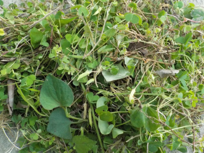
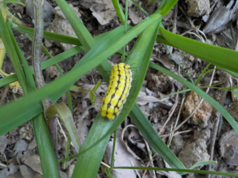
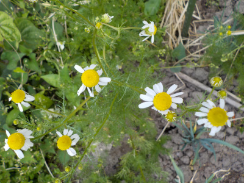
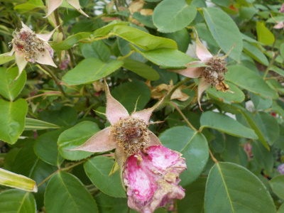
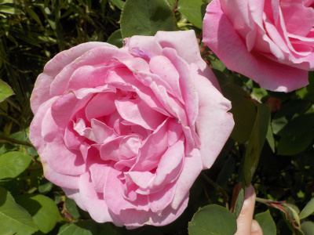
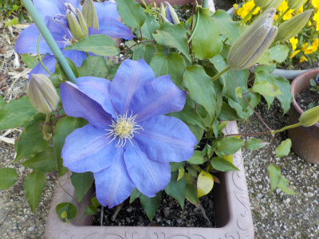

草抜きしました。
2019/05/26
畑の草抜きをコツコツしました。

ゴールデンウィークにもしたけどな。
すぐに伸びますね。

毛虫がいました。ヤバイ。危険だと思うとやる気がなくなりやめました。
2019/05/26
畑の草抜きをコツコツしました。

ゴールデンウィークにもしたけどな。
すぐに伸びますね。

毛虫がいました。ヤバイ。危険だと思うとやる気がなくなりやめました。
2019/05/26
畑にいるとカモミールの香りがします。

今年は量が少ないので収穫しません。なのでカモミールティーは飲めないな。
秋になったら種まきするつもりなので、来年は沢山収穫する予定。
2019/05/26
花が終わったので花ガラを摘みました。

ちょっと多めに切って小さくしましたが、もっと切ってもよかったかな。
バラの高さって何センチくらいがいいんでしょうね。
2019/05/12
各地であるバラまつりはもうちょっと先ですが、家のバラは今頃が一番いいかな。

四季咲きなのでよく咲いてるんえすが、今は花の大きさが普段よりかなり大きいです。
とっても重そう。
私はこんな厚い花よりも、シンプルなのが好きだな。
2019/05/03
自分で挿し木から育てたものが成長して、花を咲かせる様になりました。

達成感が有りました。
良かった。いい気分です。
もうちょっとしたら挿し木の季節です。次は何を育てようかな。
過去の日記
畑仕事じゃないよ。